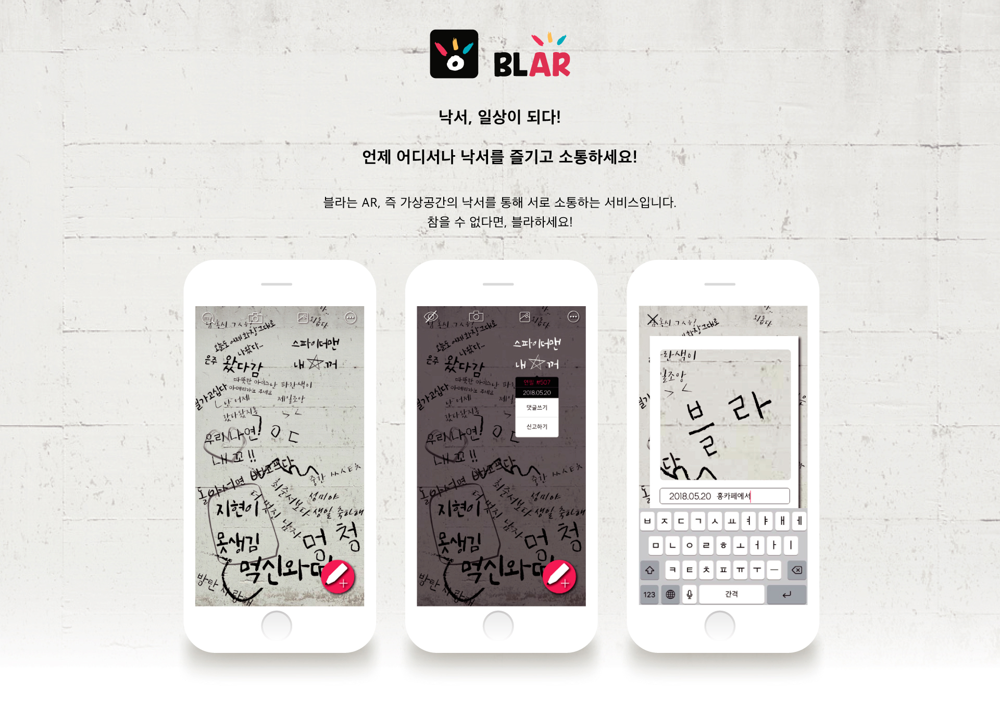
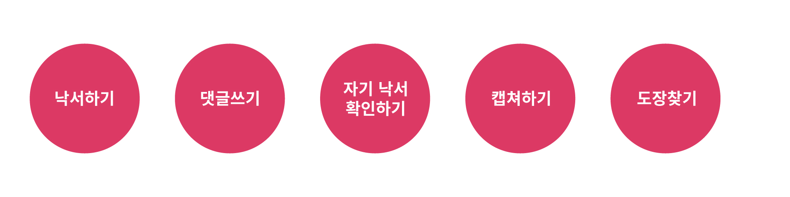

Type of work : UX/UI

낙서를 하고 싶어하는 사람들, 낙서를 해서는 안되는 장소와의 대립.
우리는 어딜가나 쉽게 낙서를 발견할 수 있습니다.
그러나 현장에 무분별하게 적혀있는 낙서들은 불쾌하게만 느껴집니다.
사람들은 왜 낙서를 하는걸까요?
167명을 대상으로 설문지를 돌려 낙서에 대한 경험 혹은 인상에 대해 조사했습니다.
다수의 사람들이 낙서를 해 보았으며 그를 통해 긍정적 효과를 받았다는 것을 알 수 있습니다. 또한, 이를 보는 것 또한 긍정적 효과를 가지고 온다는 것과, 그의 반동으로 부정적 인상을 심어주기도 한다는 결과를 확인할 수 있었습니다.
또한, 이를 보는 것 또한 긍정적 효과를 가지고 온다는 것과, 그의 반동으로 부정적 인상을 심어주기도 한다는 결과를 확인할 수 있었습니다.
또한, 이를 보는 것 또한 긍정적 효과를 가지고 온다는 것과, 그의 반동으로 부정적 인상을 심어주기도 한다는 결과를 확인할 수 있었습니다.
결과적으로, 대다수가 낙서를 통해 재미를 느끼고, 추억을 공유하고 싶은 욕구를 느끼지만, 시각적/환경적으로 보기 좋지 않다는 의견이 다수라는 것을 느낄 수 있었습니다.
그렇다면, 이를 해결하기 위해서는 어떻게 해야 할까요?
답은 간단합니다.
가상공간에서의 낙서를 가능하게 하는것이죠.
낙서의 목적/특징들을 모아, 그것들을 반영하기 위한 다섯가지 기능들을 만들었습니다.
또한, 이러한 특징들을 반영한 어플들을 조사하여, 브랜드 컬러를 지정하였습니다.
시작하기
켜자마자 카메라 연동이 바로 됩니다.
낙서하기

댓글쓰기
댓글을 작성하고 싶은 낙서를 클릭하고, 원하는 문구를 작성하면 댓글이 작성됩니다.
자기 낙서 확인하고 연장 혹은 지우기.
낙서와 AR의 특성상 , 그 낙서를 한 위치에서만 삭제 혹은 연장이 됩니다. 연장하지 않을 경우, 낙서는 시간이 지나 없어집니다.
캡쳐하기
낙서를 캡쳐해서 특별한 문구를 적어보세요. 그리고 친구와 추억을 나눠보세요!
도장찾기
근처에 이벤트 문구가 포함된 낙서가 있을 경우, 알람이 울리게 됩니다. 낙서를 찾는김에 구경도 하고, 즐거운 시간을 보내세요.
프로모션 이미지